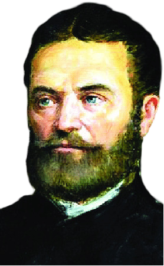
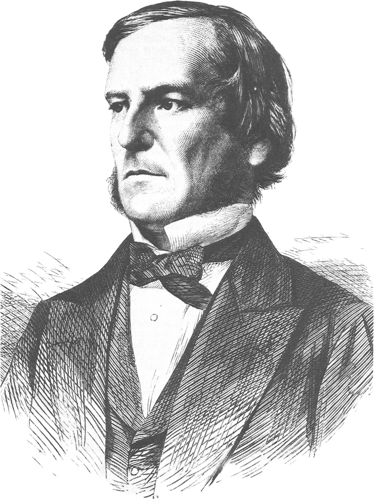
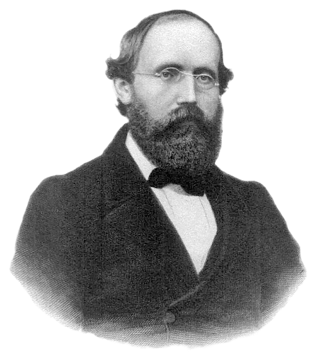
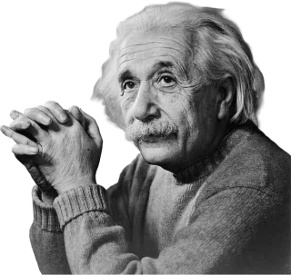
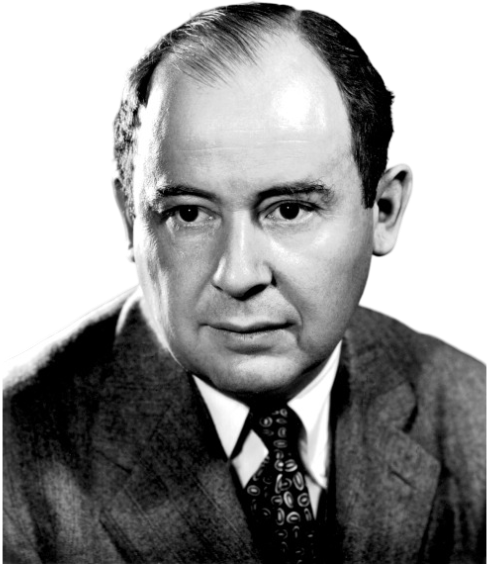

Nu-ți face griji prea mult pentru dificultățile tale la matematică, te asigur că ale mele sunt și mai mari
- Albert Einstein -
Lumea Modernă
Perioada modernă în matematică, începând cu secolul XIX și până în prezent, a adus o explozie de idei și ramuri noi. Geometriile neeuclidiene, algebrele abstracte, teoria mulțimilor, logica formală, computația, teoria haosului și inteligența artificială sunt doar câteva dintre domeniile apărute sau profund dezvoltate în această perioadă. O trăsătură distinctivă este specializarea tot mai mare, dar și interconectarea dintre matematică și științele aplicate, precum fizica, economia, biologia și informatica. De asemenea, apariția calculatoarelor a revoluționat modul în care matematicienii pot explora și testa idei.
János Bolyai (1802 – 1860) a fost un matematician maghiar, cunoscut pentru contribuțiile sale în geometria neeuclidiană. Independendent de Lobacevski, Bolyai a dezvoltat o geometrie în care axioma paralelelor a lui Euclid nu mai era valabilă – o revoluție care a schimbat pentru totdeauna înțelegerea spațiului. O curiozitate este că tatăl său, și el matematician, l-a avertizat să nu se implice în studiul axiomei paralelelor, considerând-o „un drum spre nebunie” – avertisment pe care János l-a ignorat cu îndrăzneală.

János Bolyai
George Boole (1815 – 1864) a fost un matematician și logician britanic, considerat părintele logicii matematice moderne. A dezvoltat algebra booleană, un sistem algebric care stă la baza funcționării circuitelor digitale și a logicii computaționale, fără de care calculatoarele nu ar exista în forma lor actuală. Fapt interesant: Boole era autodidact și a învățat singur greaca și latina înainte de vârsta de 14 ani, demonstrând o curiozitate intelectuală ieșită din comun.

George Boole
Bernhard Riemann (1826 – 1866) a fost un matematician german care a avut o influență enormă asupra geometriei și analizei matematice. Este cunoscut pentru ipoteza Riemann despre distribuția numerelor prime și pentru dezvoltarea geometriei riemanniene, care a fost ulterior folosită de Einstein pentru formularea teoriei relativității generale. Riemann era timid și retras, dar a avut o intuiție matematică profundă care l-a făcut să exploreze concepte ce erau mult înaintea timpului său.

Bernhard Riemann
Bertrand Russell (1872 – 1970) a fost un filosof și logician britanic, una dintre figurile centrale ale logicii și filosofiei secolului XX. Împreună cu Alfred North Whitehead a scris „Principia Mathematica”, o încercare monumentală de a reduce toată matematica la logică pură. Un fapt interesant: Russell a fost și un activist social fervent, primind Premiul Nobel pentru Literatură în 1950 pentru scrierile sale filozofice și pacifiste.
Bertrand Russell
Albert Einstein (1879 – 1955) a fost un fizician teoretician de origine germană, renumit pentru teoria relativității generale. Matematica a fost instrumentul cheie în formularea teoriei relativității, în special geometria diferențială și tensorială, inspirată de lucrările lui Riemann. Deși nu era matematician de profesie, colaborarea sa cu matematicieni a fost esențială. Curiozitatea legată de Einstein este că a avut dificultăți în sistemul educațional tradițional, fiind perceput ca un elev rebel și neconformist – dar cu o imaginație extraordinară.

Albert Einstein
John von Neumann (1903 – 1957) a fost un matematician, fizician și informatician maghiar-american, considerat unul dintre cei mai versatili savanți ai secolului XX. A pus bazele arhitecturii moderne a computerelor, a contribuit la teoria jocurilor, analiza funcțională, teoria automatelor și la dezvoltarea bombei atomice. Un aspect fascinant despre el este că avea o memorie aproape fotografică și putea recita pagini întregi de texte după o singură lectură.

John von Neumann
Alan Turing (1912 – 1954) a fost un matematician și criptanalist britanic, considerat părintele informaticii moderne și al inteligenței artificiale. A formulat conceptul de „mașină Turing”, un model teoretic de computer, și a jucat un rol crucial în spargerea codurilor Enigma în timpul celui de-al Doilea Război Mondial. Curiozitatea tragică este că, în ciuda contribuțiilor sale colosale, Turing a fost condamnat pentru homosexualitate și a murit în circumstanțe controversate, fiind reabilitat postum de către guvernul britanic.
Alan Turing
John Forbes Nash (1928 – 2015) a fost un matematician american cunoscut pentru lucrările sale în teoria jocurilor, geometrie și economie. A dezvoltat conceptul de „echilibru Nash”, fundament în analiza economică și strategică, pentru care a primit Premiul Nobel pentru Economie în 1994. Un detaliu impresionant este că Nash a suferit de schizofrenie paranoidă, dar a reușit să continue cercetările sale științifice – o poveste inspiratoare care a stat la baza filmului „A Beautiful Mind”.